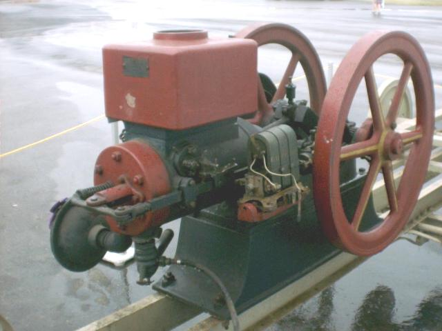

My name is Andrew Albrecht and I was born and raised in Cincinnati, Ohio. In the mid 90s, I became interested in hit and miss gasoline engines when a coworker introduced them to me at a farm show. Since then, I have collected about 15 engines and 4 marine type boat engines. I also have a few pieces of farm equipment including a corn sheller, corn grinder, and a large water pump and I also make reproduction parts for Magnetos which I sell mainly to Mark's Magneto Repair Service.
Here are a few photos of my collection. All are running engines and working equipment.
The John Deere engine was a repaint only and the John Deere Corn Sheller was a complete restoration.
John Deere Corn Sheller

1909 Galloway 5 H.P.
1930s John Deere 1-1/2 H.P.
1911 International Harvester Famous 3 H.P.
Maytag